HaoTian · 2024-10-27 19:33:19
插入符号颜色属性指定输入字段或任何可编辑文本区域中插入符号（文本光标）的颜色。它允许您自定义闪烁的垂直线的颜色，该垂直线指示文本的插入位置。
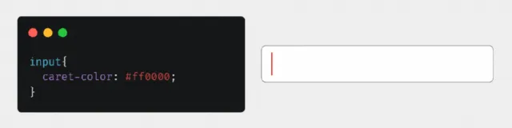accent-color 属性用于指定元素中某些表单控件（如单选按钮、复选框等）的强调色。此属性将覆盖浏览器的默认主题颜色，并将其替换为开发人员指定的颜色。
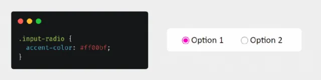pointer-events 属性确定哪些事件可以在元素上触发。例如，当元素的 pointer-events 属性设置为 none 时，将鼠标悬停在上面时不会发生鼠标活动。
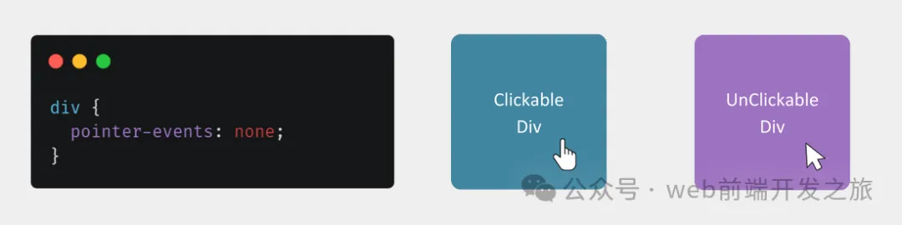user-select 属性确定元素中文本的可选择性。设置为 none 时，用户无法选择文本。
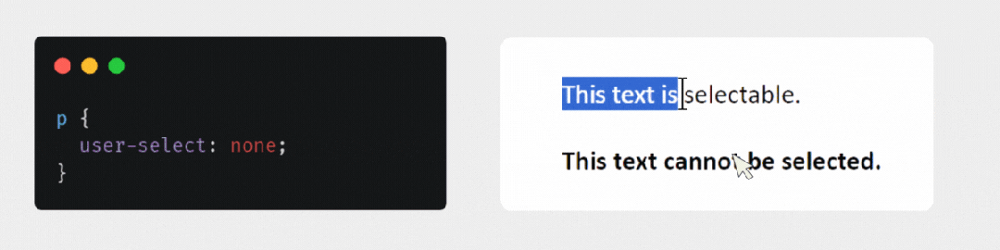连字符属性会自动在行尾换行长词，以提高文本的可读性。如果单词超过行宽，则会在适当的位置断开并移动到下一行。
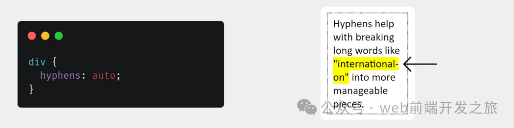quotes 属性用于自定义自动添加到网页上引号文本。
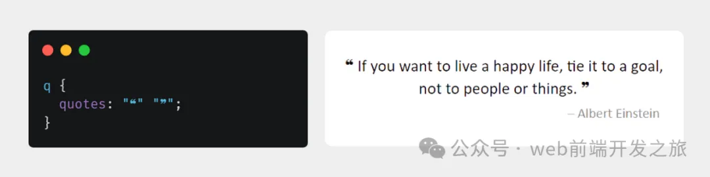text-emphasis 属性用于强调文本块中的某些字符。这些字符通常用于表示文本的含义或重要部分。
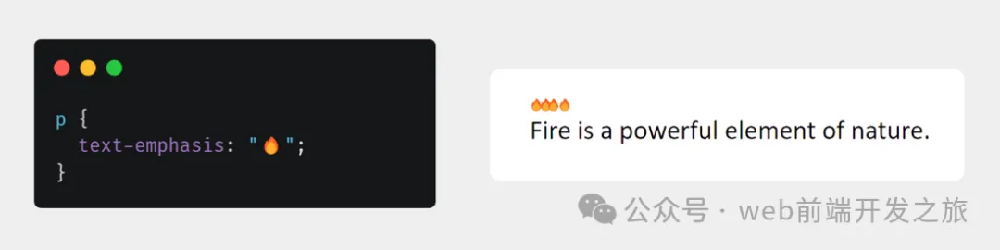使用 backdrop-filter CSS 属性，可以将各种效果应用于元素后面的内容。它通常用于模糊背景、更改其颜色或添加阴影，为创建现代网页设计提供了强大的工具，尤其是对于透明或半透明背景。
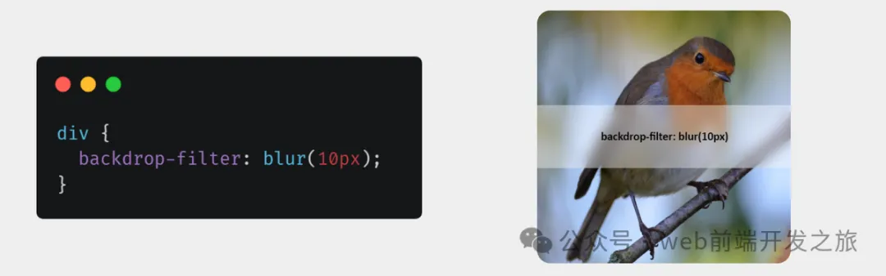backface-visibility CSS 属性确定元素在 3D 空间中旋转时是否可见。如果背面不可见，则浏览器不会呈现它，这可以提高性能。
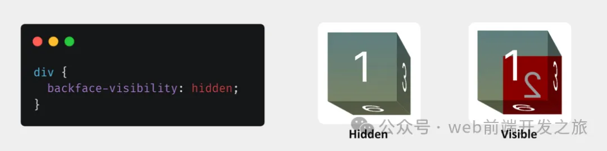background-clip 属性确定背景的剪切方式。此属性控制背景是延伸到内容框的边缘，还是剪切到填充和边框区域。
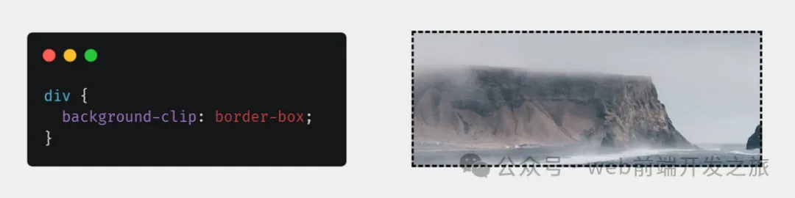mix-blend-mode 属性是一个 CSS 属性，用于混合两个或多个图层的颜色。此属性将一个图层的颜色与其下面的图层混合，从而在屏幕上创建不同的视觉效果。它在处理背景、重叠元素和图像时特别有用。
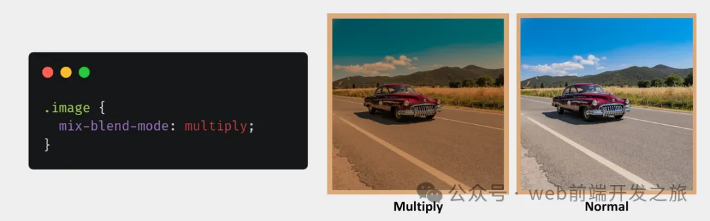image-rendering 属性用于确定应如何呈现图像。它告诉浏览器在缩放或调整图像大小时使用哪种算法。此属性对于 Web 开发人员在放大或缩小图像时保持质量特别有用。
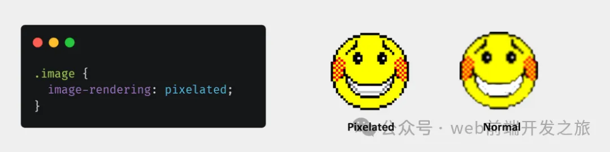scroll-snap-type 属性用于启用滚动容器内对齐点之间的平滑过渡。此功能通过确保在用户滚动页面时内容部分干净对齐，从而提供更结构化的用户体验。scroll-snap-type 属性控制沿水平轴或垂直轴滚动，并定义对齐点的参与方式。
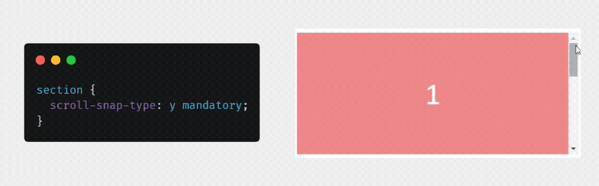shape-outside 属性定义文本如何环绕 HTML 元素。此属性对于浮动元素特别有用。定义的形状决定了文本围绕该元素的流向，使文本能够平滑地环绕非矩形形状。
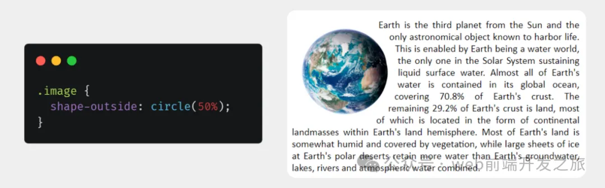CSS 用户选择属性是用于自定义数字和自动对 HTML 文档中的特定元素进行编号的属性。此功能可用于向列表项或特定 HTML 元素添加数字。
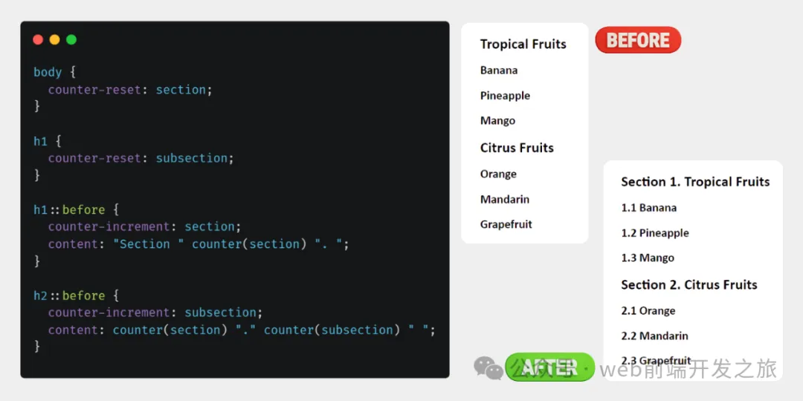content → 与 ::before 和 ::after 伪元素一起使用，以插入生成的内容。
counter-increment → 递增一个或多个 counter 值。
counter-reset → 创建或重置一个或多个计数器。
counter() → 返回命名计数器的当前值。